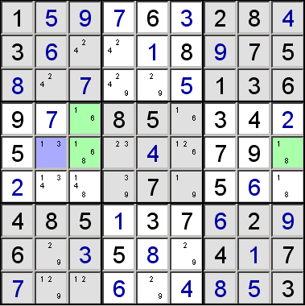

This is a variation of an XY-wing. In the partial puzzle below, consider the cells that have only the candidates shown. Any cells that share a unit with all three cells XYZ, XY and YZ, can have Z eliminated from their candidates.
|
|
It can be easily seen that which ever value is in XYZ, the cells marked with the asterisk cannot be Z.
if XYZ = X, then XZ = Z, so * cannot be ZThis allows Z to be eliminated from the candidates for the marked cells.
if XYZ = Y, then YZ = Z, so * cannot be Z
if XYZ = Z, then * cannot be Z
In the puzzle below, the XYZ-wing in the green cells allows 1 to be eliminated from the blue cell.
